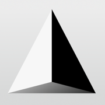

ONELAB in the browser
Gmsh and GetDP compiled to WebAssembly and running entirely in your browser: models are meshed, solved and post-processed on your device, nothing is sent to a server.
Start from scratch, or give it your own model: a .geo, a
.pro with the .geo of the same name and the files
they include, a folder, or a zip archive. Or pick one of the examples
below.
The first visit downloads about 16 MB (Gmsh with OpenCASCADE, GetDP with PETSc, SLEPc and UMFPACK), which the browser keeps afterwards. Needs a recent Chrome, Firefox, Edge or Safari with WebGL 2.
the app, to open it from the home screen or the desktop, without the bars of the browser
To have the app on the home screen, without the bars of the browser: tap Share , then Add to Home Screen.